Фото
Как это выглядит
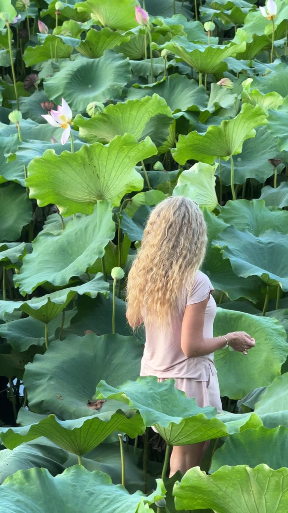
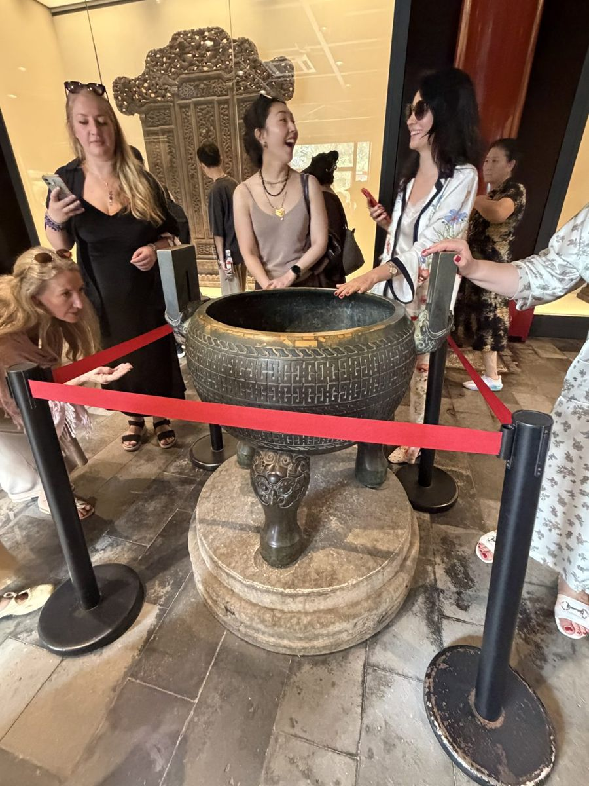
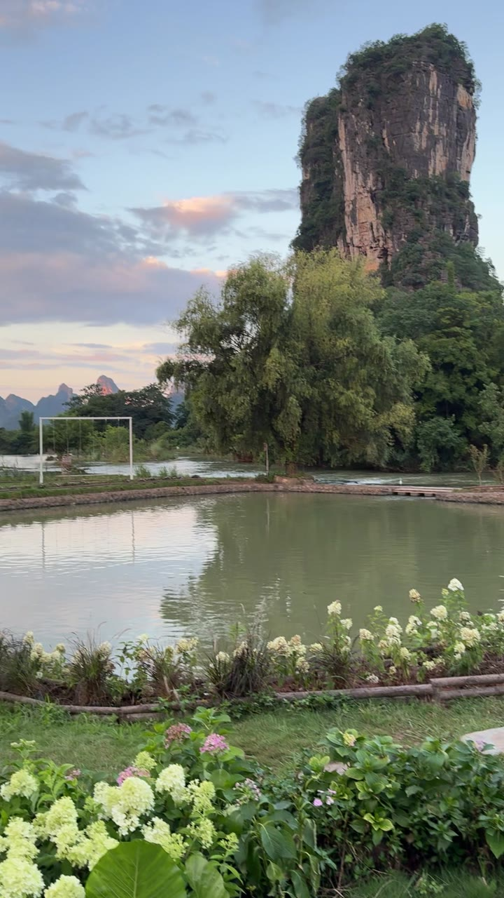
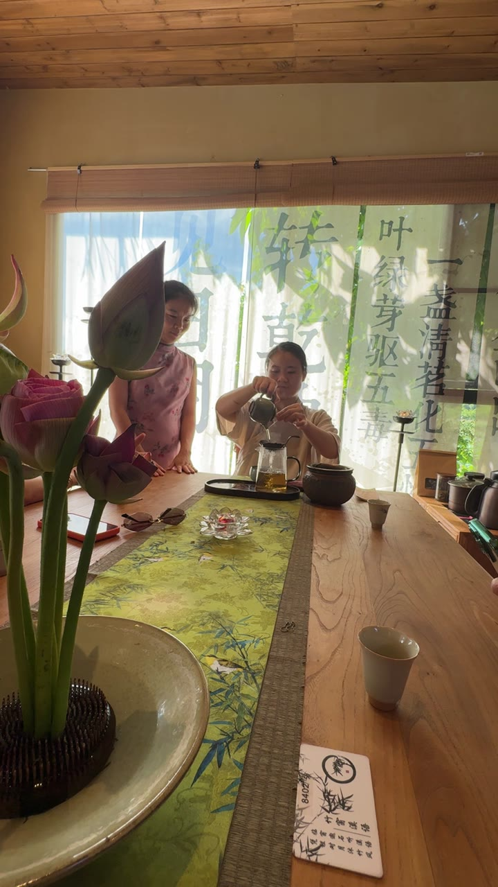

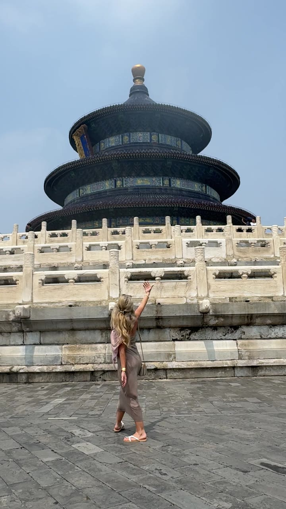
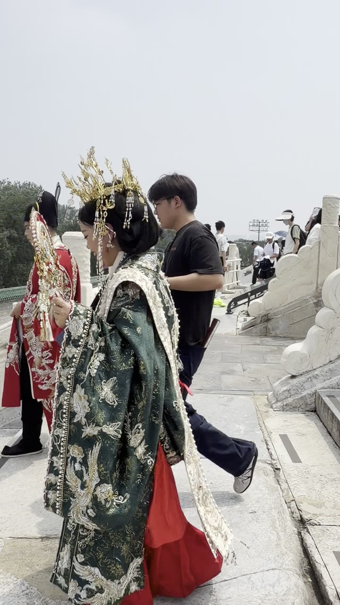
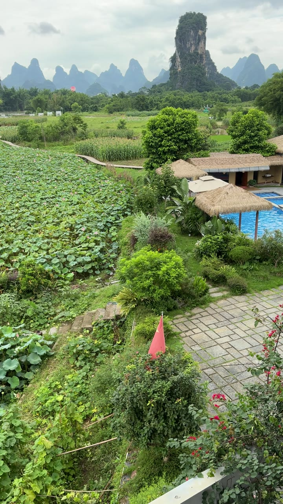
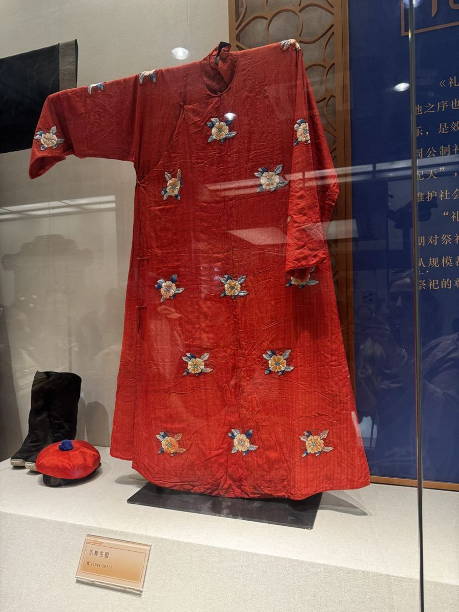
Священное путешествие по древнему Китаю и путешествие обратно к себе
Хочу на ретритКитай несёт мощную энергию мудрости, дисциплины, трансформации и внутренней силы. Мы будем открывать не только его священные места, древние традиции и природу, но и те части себя, которые готовы проснуться.
Дракон это древний символ мудрости, силы, защиты и перемен. На ретрите вы встретитесь со своим внутренним драконом, пробудите силу и вернёте ощущение доверия, ясности и опоры на себя.
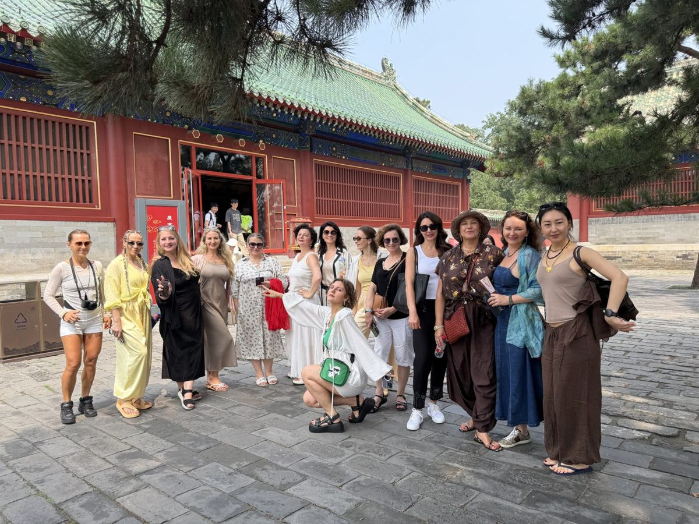
01Знакомство, ужин-открытие и первый женский круг. Храмы и древняя история.
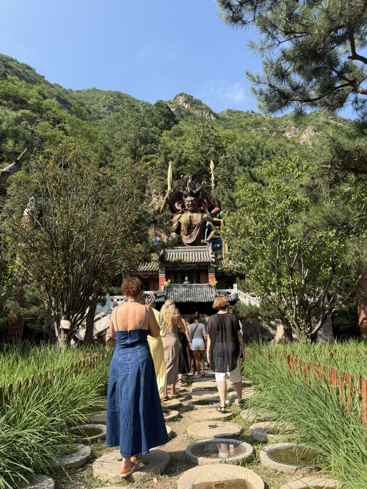
02Горы «Аватара», гора Тяньмэнь, Небесные врата и храм Тяньмэнь.
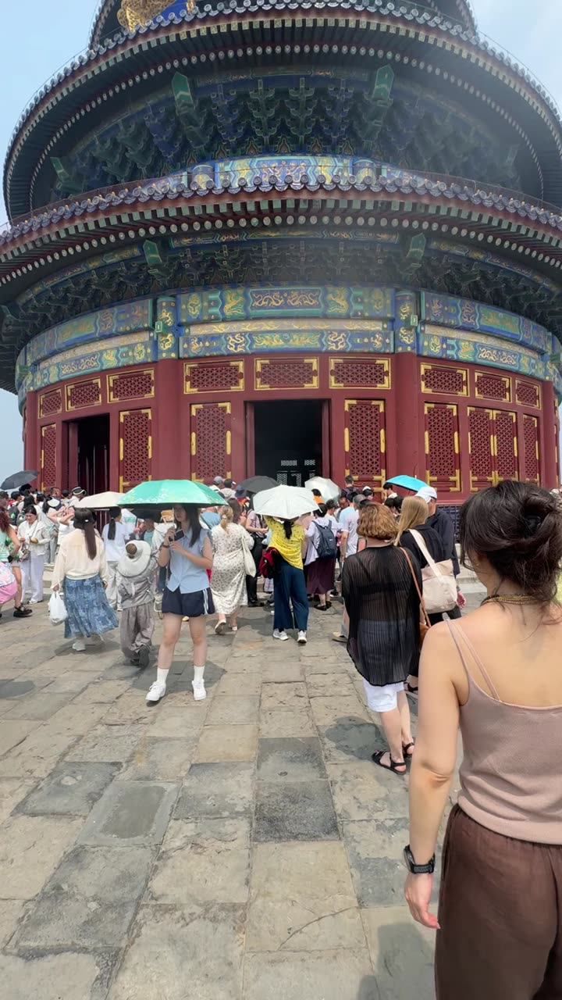
03Карстовые горы, реки Ли и Юлун, древние мосты. Замедляемся и проживаем всё, что открылось.
Короткие видео с наших путешествий. Проведите пальцем вверх или нажмите стрелку, чтобы смотреть дальше.
Женский круг под соснами
Чайная церемония
Лотосовые поля Яншо
Чай как медитация
Прогулки в тишине
Храм Неба
Примерить другую эпоху
Тишина среди лотосов
Горы Яншо на закате
Сила и дыхание Шаолиня
Храм Неба. Пекин 🐉
Тишина гор и древних садов
Наш женский круг
Храмы, где замедляется время
Пространство для себя
Путь дракона продолжается








.jpg)
Я приглашаю в тёплый круг женщин: тех, кто уже ведёт успешное дело, и тех, кто только становится лидером, создаёт бренд или готовится воплотить большую идею.
Это путешествие не про то, чтобы работать больше. Оно про то, чтобы создавать из ясности, внутренней опоры и доверия к себе. Вы вернётесь домой не только с красивыми воспоминаниями, но и с новой энергией и пониманием того, что возможно в вашей жизни.
Напишите мне в директ слово CHINA, и я лично пришлю полную программу, варианты проживания и стоимость.
Написать CHINAТакже в 2027: ретрит «Тайны Египта», 1-10 мая